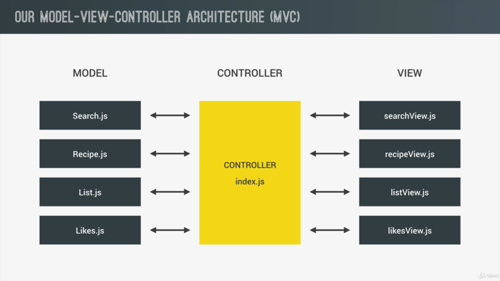

Open forkify_mvc.html for the markup/code | Images are taken from: JS Course by Jonas Schmedtmann
We will build our project using the MVC architecture which stands for Model, View & Controller architecture. We logically build our app by separating concerns for the Model (data) and View (front-end related) using our Controller (where everything inter-mingles) as shown in the image above. Now to logically separate code Model, View & Controller, we will use the ES6 Modules to our advantage and make our codebase easy to read and access.